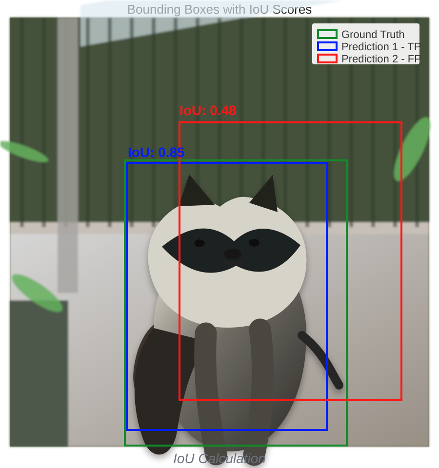

Object Detection
image → boxes + labels + scores
Outputs
Bounding box
where
Class label
what
Confidence
how sure
Model families
One-stage
YOLO-style
Transformer
DETR-style
Real-time
RT-DETR / YOLO
Training
Annotations
human draws box
IoU
overlap / total covered area
Anchors
preset box guesses
Anchor-free
point → box
NMS
many boxes → one
IoU

Intersection over Union
IoU asks: how much of the two boxes is shared?
IoU = overlap area / total area covered by both boxes.
How to read it
0 means no overlap. 1 means perfect match. A common rule is IoU ≥ 0.5 counts as a correct detection.
Important detail
High confidence is not enough. A box can be very confident and still be wrong if its IoU is too low.
AP
AP = one label
For one class, rank every predicted box by confidence.
Average precision
AP summarizes the precision you keep as recall grows. Bigger filled area is better.
mAP
AP = one class
AP is high when correct boxes appear before wrong boxes and most real objects are found.
mAP = many classes
mAP averages AP across labels: door, sink, toilet, etc.
IoU threshold matters
AP50 uses IoU ≥ 0.50. AP75 is stricter. mAP50–95 averages 10 tests from .50 to .95.
Metrics
Precision
of predicted boxes, how many were real?
Recall
of real objects, how many did we find?
AP
one class + one IoU cutoff. Example: cat AP at IoU .50.
mAP
mean of AP scores. Average over classes; COCO also averages IoU cutoffs.
AP50 / mAP50
Loose localization. A box counts correct when it overlaps the real box by at least 50% IoU.
mAP50–95
COCO headline metric. Average the same detector at 10 IoU cutoffs:
- .50 generous: found the object
- .75 tighter: good box
- .95 very strict: near-perfect box